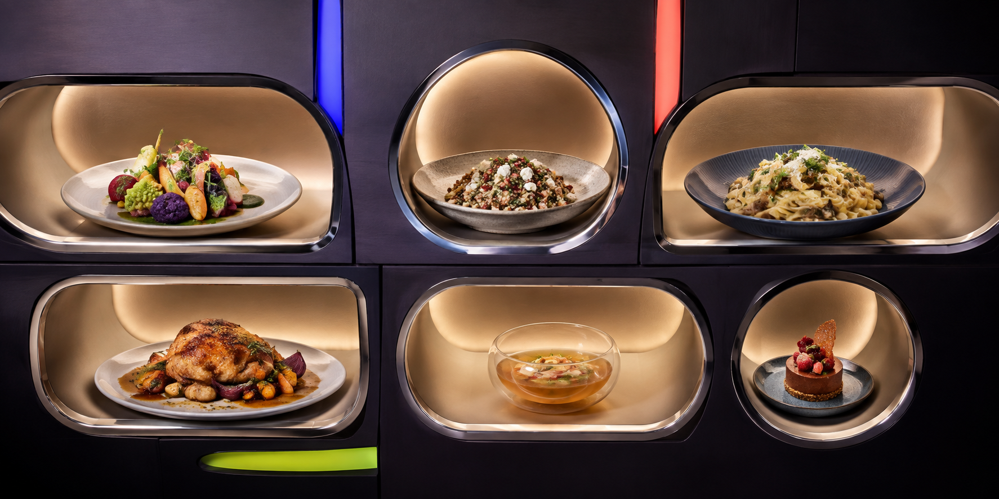

01VEGETARIAN / SEASONAL
Green Signal
Charred leek · barley · herb creamA layered vegetarian sequence with crisp leaves, toasted grain and a restrained dairy finish.
Request a planning note ↗MENU REGISTER / 08 SUPPER PROFILES
These are planning profiles, not products for sale. Ingredients, allergens and preparation details must be verified for the exact recipes and guests.

08 profiles on signal
A layered vegetarian sequence with crisp leaves, toasted grain and a restrained dairy finish.
Request a planning note ↗Three familiar components organised for a short preparation window and relaxed shared service.
Request a planning note ↗A generous central-table menu balanced by acidity and a low-pressure finishing plan.
Request a planning note ↗A compact meat-free dinner that moves from crisp to soft and finishes bright.
Request a planning note ↗A warm-colour seasonal profile; substitute the main only after confirming guest requirements.
Request a planning note ↗A sharing menu with most work completed before guests arrive and one fresh frozen finish.
Request a planning note ↗An efficient weeknight route using one oven window and a make-ahead pulse course.
Request a planning note ↗Earthy depth, toasted spice and a small dessert designed for an unhurried later table.
Request a planning note ↗